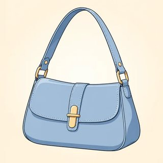
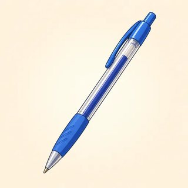

Talking About the Future — Classroom Materials
Everything to print for Classes C7–C9: picture flashcards (plans, time words, weather, certainty), future identity cards, the teacher's listening scripts, quick-decision cards ("I'll get it!"), the Crystal Ball / Weather Forecaster game, the diary information gap, and the Plans Mingle (Find Someone Who).
What to Print
| Set | What | How many | Used in |
|---|---|---|---|
| A | Picture flashcards (plans, time words, weather, certainty cards) | 1 set for the board | C7, C8 |
| B | Future identity cards (6) | 1–2 sets, on a side table | C7, C8, C9 |
| C | Listening & dictation scripts | Teacher only | C7, C8, C9 |
| D | Quick-decision cards (12) | 1 set per pair | C8 (and C9 warmer) |
| E | Crystal Ball & Weather Forecaster game (16 + 8 cards) | 1 set per group of 3–4 + 1 die | C8 |
| F | Diary information gap A/B + blank diary | 1 A/B page per pair · 1 blank per learner | C9 |
| G | Plans Mingle — Find Someone Who (game) | 1 per learner | C7 |
A · Picture Flashcards — Plans (3.1)


A · Flashcards — Future Time Words (3.1)
Stick these on the board in a line from left to right to build the time line. The last two cards (next and in) go under it for the "next Monday / in two days" contrast.
A · Flashcards — Weather & How Sure? (3.2)


Certainty cards: put them on the board in a line (100% → 0%). In Script 3.2-B learners hold up the matching card. Literacy-support learners can use the symbols only.
B · Future Identity Cards (3.1 · 3.2 · 3.3)
Any learner may use a card instead of their own plans, in any task: no reason needed. In 3.1 they use the going to lines for the "My plans" table and the mingle. In 3.2 they use the will / might line for "My 6 predictions." In 3.3 they copy the diary lines into the blank diary for round 2 of the information gap. The people are the same as in the A1 kit, one year later.
Rosa — hospital cleaner (night shift)
This weekend I'm going to sleep late on Saturday. I'm going to cook for my friends on Sunday.
This year I'm going to take a computer class.
Next year I think I'll work in the daytime. I might get a new apartment.
My diary: Mon evening: working · Wed afternoon: meeting my cousin · Sat evening: going dancing
Daniel — bus driver
This weekend I'm going to watch a soccer game. I'm not going to drive!
This year I'm going to paint my kitchen.
Next year I'll probably drive a new electric bus. I might go hiking in the mountains.
My diary: Tue evening: playing soccer · Thu afternoon: seeing the dentist · Sun: having lunch with my mom
Amina — student and mother
This weekend I'm going to take my children to the park. We're going to have a picnic.
This year I'm going to finish my English course.
Next year I think I'll start a nursing course. I might learn to drive.
My diary: Mon afternoon: taking my son to the doctor · Wed evening: English class · Fri evening: having dinner with friends
Chen — cook in a restaurant
This weekend I'm going to work. I'm going to cook a special menu!
This year I'm going to save money for a food truck.
Next year I'll open my food truck, I'm sure. It might be very busy!
My diary: Mon: my day off, going to the market · Tue evening: working late · Sat afternoon: meeting a friend at the station
Lucía — grandmother
This weekend I'm going to visit my daughter. We're going to bake a cake.
This year I'm going to learn to use video calls.
Next year I think I'll travel to the beach. I won't stop walking in the park!
My diary: Tue afternoon: walking with my friend · Thu evening: watching a movie with my grandson · Sun: having lunch with my family
Yusuf — looking for a job
This weekend I'm going to play soccer on Saturday. I'm going to study on Sunday.
This year I'm going to get a forklift license.
Next year I think I'll have a good job. I might play in a soccer team.
My diary: Mon afternoon: job interview · Wed evening: English class · Fri afternoon: helping at the community center
C · Listening & Dictation Scripts (teacher reads aloud)
Read at a natural but slow speed, with pauses. Read each script twice: once for the main idea, once to check. Use the relaxed "going to" /ɡoʊɪŋ tə/ and the contractions (I'm, it'll, won't), because that is what learners will hear outside class. The 🔊 buttons in the online lessons give learners extra listening at home.
3.1-A · Nadia's weekend (Workbook 3.1, Ex 1: ✓ or ✗)
Answers: ✓ visit her aunt · ✓ see a movie · ✓ cook · ✓ go to bed early · ✗ clean the house · ✗ go shopping · ✗ drive (her brother drives) · ✗ work.
3.1-B · What's going to happen? (evidence predictions: learners call out the prediction)
Model answers: 1 It's going to rain / storm. · 2 It's going to die / turn off. · 3 We're going to be late. · 4 It's going to fall (and break). · 5 She's going to sleep. · 6 She's going to miss the bus. Accept any logical prediction with the correct be + going to + base verb.
3.2-A · The weekend weather forecast (Workbook 3.2, Ex 1)
Answers: Friday sunny and hot (will) · Saturday afternoon cloudy, might rain (might) · Sunday rainy, windy, a storm in the evening (will) · Monday cold, might snow (might). Note: 85°F ≈ 29°C. If your learners use Celsius, say "about thirty degrees" instead.
3.2-B · Sure or not sure? (learners hold up the certainty card: will ✔✔ · might ? · won't ✘✘)
Answers: 1 will · 2 might · 3 won't · 4 might · 5 won't · 6 will · 7 might (not) · 8 will · 9 none: it's want, not won't! Use 9 to start the won't / want pronunciation stage.
3.3-A · Leo and Grace make a plan (Workbook 3.3, Ex 5: two voices, or ask a confident learner to read Grace)
Answers: 1 going to the movies on Friday (evening) · 2 she's working late · 3 Saturday · 4 at eleven · 5 at the market entrance · 6 at the market (the food stands). Follow-up: "Find 3 suggestions in the script." (How about Saturday? · Why don't we go…? · Shall we meet…? · Let's meet… · How about having lunch…?)
3.3-B · Dictation (read each sentence 3 times)
D · Quick-Decision Cards — "I'll get it!" (3.2)
One set per pair, face down. A takes a card and reads the situation with feeling ("Oh no! It's dark in here!"). B answers fast with I'll… (a decision now or an offer). The small gray words are a hint for B; cover them for stronger pairs. Swap after 6 cards. Card 12 practices a promise: I won't….








E · Game — Crystal Ball 🔮 / Weather Forecaster 🌦️ (3.2)
- Groups of 3–4. Choose a deck: Crystal Ball (life, the class, the world) or Weather Forecaster (weather). Put the cards face down. You need one die.
- Take a card. Roll the die: 1–2 = won't · 3–4 = might · 5–6 = will. Make a prediction with that word and give a reason: "Phones won't have buttons in 20 years, because everything is touch now."
- The group reacts: "I agree!" · "Maybe." · "I don't think so. I think…" The best reaction (clear, polite, with a reason) wins the card. The most cards wins the game.
- "You" cards are about the person on your left. Make it kind and light: a nice weekend, a good meal, a fun surprise. Nothing about health, money, family or where people will live.
- Anyone can say "Pass!" and take a new card. No reason needed.
Crystal Ball deck (16)
Weather Forecaster deck (8)
Same rules. Read the clues on the card and make a forecast. Use the die word at least once: "It won't snow in Miami tomorrow. It'll be sunny and very hot."
F · Diary Information Gap — Find a Time to Meet (3.3)
Pairs sit face to face and don't show their diaries. Step 1: find the one time you are both free: "Are you doing anything on Monday afternoon?" — "Yes, I'm going to the dentist. How about Tuesday evening?" Step 2: suggest an activity from the ideas box: "Let's… / Why don't we…? / How about …ing?" Say a polite no to the first idea if you want. Step 3: agree a time and place and confirm: "So we're meeting on … at … See you then!" Answer (teacher only): Thursday evening.
This week
| Afternoon | Evening | |
|---|---|---|
| Mon | 💼 working | 📚 going to English class |
| Tue | 🩺 taking my son to the doctor | free |
| Wed | 💼 working | 🍲 cooking dinner for my aunt |
| Thu | free | free |
| Fri | 💼 working | 🎂 going to a birthday party |
| Sat | ⚽ playing soccer | free |
| Sun | 👵 visiting my grandmother | free |
Ideas: 🎬 see a movie · 🍽️ have dinner at a restaurant · ☕ get a coffee · 🌳 go to the park · 💃 go dancing · ⚽ watch a soccer game
Start: "Are you doing anything on Monday afternoon?"
This week
| Afternoon | Evening | |
|---|---|---|
| Mon | free | 📚 going to English class |
| Tue | 💼 working | 💼 working late |
| Wed | free | 🚉 meeting a friend at the station |
| Thu | 🦷 seeing the dentist | free |
| Fri | free | 🍽️ having dinner with my family |
| Sat | 🛒 shopping at the market | ⚽ watching a soccer game with my brother |
| Sun | free | 🌙 working (night shift) |
Ideas: 🎬 see a movie · 🍽️ have dinner at a restaurant · ☕ get a coffee · 🌳 go to the park · 💃 go dancing · ⚽ watch a soccer game
Start: Answer first. Then ask: "What about Wednesday afternoon?"
Round 2 · My diary (blank, 1 per learner)
Write 6 plans with -ing (real, a future identity card, or imagined). Leave some times free. Then find a time with a new partner. Add an invitation ("Would you like to…?") and one polite no ("I'd love to, but…").
| Afternoon | Evening | |
|---|---|---|
| Mon | ||
| Tue | ||
| Wed | ||
| Thu | ||
| Fri | ||
| Sat | ||
| Sun |
- Are you doing anything on … ?
- Yes, I'm … ing. / No, I'm free.
- How about … ?
- Let's … ! / Why don't we … ?
- Good idea! / Sure, that sounds great.
- I'd love to, but I'm … ing.
- So we're meeting on … at … .
- See you then!
G · Game — Plans Mingle: Find Someone Who… (C7)
Photocopy one per learner. Learners stand up, walk, and ask "Are you going to cook something special this weekend?" If the answer is "Yes, I am," write the name and ask the extra question. One name per box; ask each person only one or two questions, then move on. Get at least two names in each part. At the end, report with he/she: "Ana is going to visit her family this weekend. She's going to take the bus."
| Find someone who is going to… | Name | Extra question |
|---|---|---|
| 🎉 This weekend | ||
| 1. cook something special | What are you going to cook? | |
| 2. visit family or friends | Who are you going to visit? | |
| 3. watch a soccer game | Which team is going to win? | |
| 4. go shopping | Where are you going to go? | |
| 5. clean the house | Which room first? | |
| 6. get up late | What time? | |
| 🎆 This year / next year | ||
| 7. learn something new | What are you going to learn? | |
| 8. travel | Where are you going to go? | |
| 9. start a new job or class | What kind? | |
| 10. read a book in English | Which book? | |
| 11. get a driver's license | When? | |
| 12. cook more at home / eat more vegetables | Why? | |
Before the mingle, drill the question on the board: "Are you going to + base verb … this weekend?" and the short answers "Yes, I am. / No, I'm not." (never "Yes, I'm."). A "No, I'm not" is fine: say "OK, thanks!" and ask someone else. Learners with a future identity card answer as their card person. For literacy support, read the rows aloud first and let learners mark a ✓ and the first letter of the name.